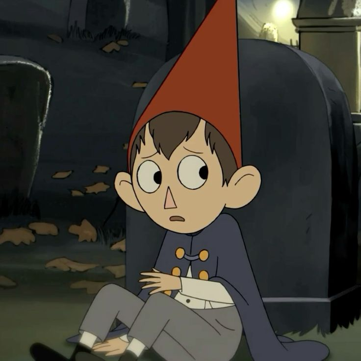
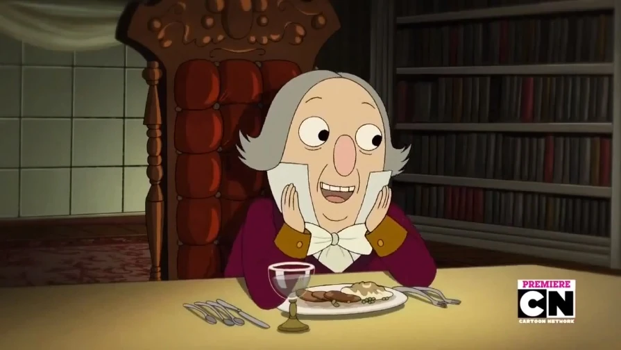

🍂 Over the Garden Wall
"Bilinmeyen'e hoş geldiniz..." Ormanda kaybolmaya hazır mısın?
1. İki kardeşin kaybolduğu ormanın adı nedir?
2. Wirt'in kırmızı şapkası aslında neyi temsil etmektedir?
3. Greg'in kurbağaya verdiği son ve kalıcı isim nedir?

4. Çocuklara rehberlik etmeye çalışan ama onları tuzağa düşüren yaşlı adam kimdir?
5. Mavi kuş Beatrice aslında nedir?
.jpeg)
6. Canavar'ın (The Beast) temel amacı nedir?
7. Wirt ve Greg aslında hangi dönemden gelmektedir?
8. Wirt'in ayakkabı bağcıklarının çözük olması neyi anlatır?
9. "Pottsfield" köyünün sakinleri aslında nedir?
.gif)
10. Wirt'in kaseti kimin için hazırlanmıştır?
11. Oduncu neden fenerin sönmemesi gerektiğine inanır?
.jpeg)
12. Greg'in karakteri nasıldır?
13. "Adelaide" kimdir?
14. Quincy Endicott neyden korkmaktadır?
15. Wirt, Canavar'ı nasıl yener?
16. Hikaye hangi bayram zamanında geçmektedir?
17. Wirt, Jason Funderburker'ı neden kıskanır?
18. Çocuklar ormana nasıl gitmişti?
.gif)
19. Greg'in "Rock Fact" (Kaya Gerçeği) taşı ne işe yarar?
20. Jenerikteki piyano çalan kurbağa neyi anlatır?
.jpeg)